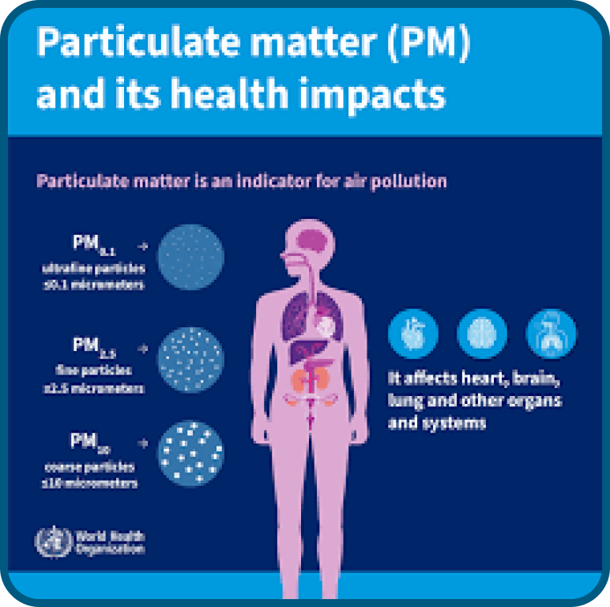

LA POLLUTION, QU’EST-CE QUE C’EST ?
La pollution de l’air (ou pollution atmosphérique) désigne la présence dans l’air de substances (gaz, particules, composés chimiques) en quantités anormales ou nuisibles pour la santé, l’environnement ou les biens matériels.
Parmi les polluants les plus connus :
- Particules en suspension (PM10, PM2,5) : particules solides ou liquides flottant dans l’air, souvent issues de la combustion ou de réactions chimiques dans l’atmosphère. Airparif+3Santé Publique France+3Ministère de la Transition écologique+3
- Oxydes d’azote (NOx), dioxyde de soufre (SO2) : émissions liées aux transports, aux centrales électriques, aux industries ou au chauffage. Airparif+3Santé Publique France+3Canadian Cancer Society+3
- Composés organiques volatils (COV), hydrocarbures : provenant des solvants, de la combustion, des carburants, des produits chimiques. Santé Publique France+2Canadian Cancer Society+2
- Ozone troposphérique (O3) : polluant secondaire formé par réaction entre NOx et COV sous l’action du soleil. Santé Publique France+1
Sur la santé, la pollution de l’air peut :
- Irriter les voies respiratoires, provoquer toux, difficulté à respirer, asthme, bronchite.
- aggraver des maladies cardiaques ou pulmonaires.
- contribuer à des décès prématurés liés aux maladies cardiovasculaires et respiratoires.
- être liée à certains cancers, notamment le cancer du poumon : certains composants de la pollution de l’air sont classés comme cancérogènes.